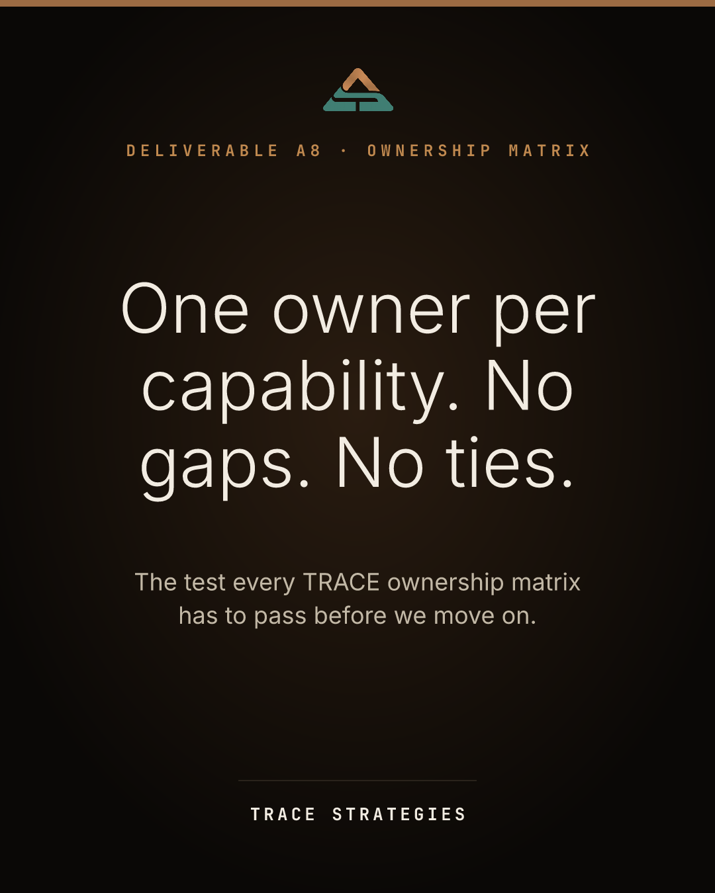

Tue, Sep 22One owner per capability. No gaps. No ties.method

Drag the image into the post, or find it in the posts folder as 2026-09-22-ownership-matrix.png
The TRACE method produces twelve deliverables. This is one of them: the ownership matrix. It lists every capability the business depends on, from taking an order to closing the month, and puts one accountable name next to each one, along with the system where that capability's data lives. It only passes when three things are true: Every capability has an owner. No capability has two. Every owner can point to where their data is kept. We hold it to that test because stalled work is rarely a skill problem. It is usually a capability two people each think the other one owns. A full page does not pass. A matrix someone can run the business from does.
Deliverable A8: the ownership matrix. Every capability the business depends on gets one accountable owner and a named home for its data. It passes only when there are no gaps and no ties, because stalled work is usually a capability two people think the other one owns.
Alt text: Dark card reading: One owner per capability. No gaps. No ties. Deliverable A8, the ownership matrix.